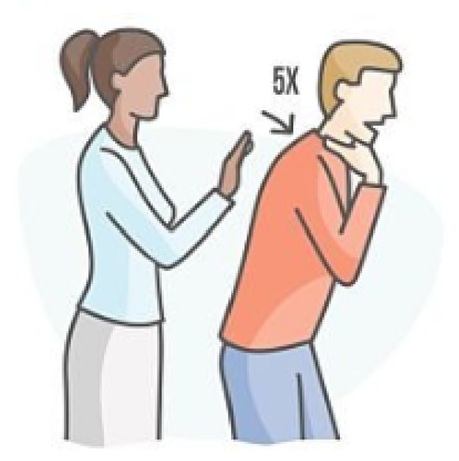
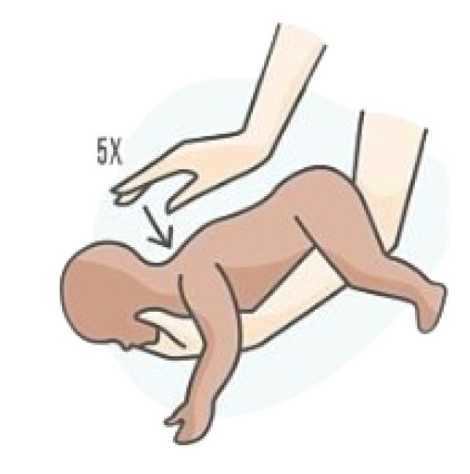

<!DOCTYPE html>
<html lang="en">
<head>
<meta charset="UTF-8">
<meta name="viewport" content="width=device-width, initial-scale=1.0">
<body style="background-color: rgb(242, 255, 240);"></body>
<title>video</title>
<link rel="preconnect" href="https://fonts.googleapis.com">
<link rel="preconnect" href="https://fonts.gstatic.com" crossorigin>
<link href="https://fonts.googleapis.com/css2?family=Itim&display=swap" rel="stylesheet">
<style>
    
    * {
        margin: 0;
        padding: 0;
        box-sizing: border-box;
        font-family: sans-serif;
    }

    body {
        background: #ffffff;
        height: 100vh;
    }

    .navbar {
        margin-top: -7%;
        position: fixed;
        width: 95%;
        height: 80px;
        margin-left: 2.5%;
        padding-left: 2%;
        padding-right: 2%;
        background: linear-gradient(90deg, #79CBBE, #5798ed);
        display: flex;
        align-items: center;
        justify-content: space-between;
        border-bottom: 1px solid lch(100% 0.01 296.81 / 0.1);s
    }

    .menu-icon {
        width: 35px;
        cursor: pointer;
    }

    .menu-icon div {
        width: 100%;
        height: 4px;
        background: white;
        margin: 6px 0;
        border-radius: 4px;
    }

    .navbar-title {
        color: white;
        font-size: 22px;
        font-weight: 600;
        margin-left: 20px;
    }

    .nav-links {
        display: flex;
        gap: 25px;
        align-items: center;
    }

    .nav-links a {
        color: #ffffff;
        text-decoration: none;
        font-size: 16px;
        transition: 0.2s;
    }

    .nav-links a:hover {
        color: white;
        text-decoration: underline;
    }

    .profile {
        width: 50px;
        height: 50px;
        background: white;
        border-radius: 50%;
        display: flex;
        justify-content: center;
        align-items: center;
        overflow: hidden;
    }

    .profile img {
        width: 70%;
    }

    .center-section {
        display: flex;
        align-items: center;
        gap: 40px;
    }
    .video {
        display: grid;
        place-items: center;
        height: 50vh;
    }

    .container {
    display: grid;
    grid-template-columns: repeat(3, 1fr); /* 2 คอลัมน์ */
    gap: 20px; /* ระยะห่าง */
    width: 550px; /* ปรับได้ */
    margin-top: 8%;
    margin-bottom: 3%;
    margin-left: 30%; /* จัดให้อยู่กลางหน้า */
    border-radius: 10%
    
}.itim-regular {
  font-family: "Itim", cursive;
  font-weight: 400;
  font-style: normal;
}
    .head {
        font-size: 55px;
        font-family: "Itim", cursive;
        font-weight: 400;
        font-style: normal;
        color: rgb(11, 60, 173)   
        
    }
.box {
    width: 180px;
    height: 180px;
    border: 2px solid #868686;
    display: flex;
    justify-content: center;
    align-items: center;
    font-size: 20px;
    border-radius: 20%
}
.men {
    font-size: 50px;
    margin-top: 45%;
    color: #2ed7a7;
      font-family: "Itim", cursive;
  font-weight: 400;
  font-style: normal;

}
.kid {
    font-size: 50px;
    margin-top: 40%;
    color: #2ed7a7;
      font-family: "Itim", cursive;
  font-weight: 400;
  font-style: normal;

}
</style>

</head>
<body>

<div class="navbar">

    <div class="menu-icon">
        <div></div>
        <div></div>
        <div></div>
    </div>

    <div class="center-section">
        <div class="navbar-title">Oร่อย Safeswallow</div>

        <div class="nav-links">
            <a href="#">Work</a>
            <a href="#">Services</a>
        </div>
    </div>

    <div class="profile">
        
    </div>

</div>

<div class="container">
    <h1 class="men">ผู้ใหญ่</h1>
    
    
    <h1 class="kid">เด็ก</h1>
    
    
</div>
        </div>
    </div>
    <div class="video">
        <h1 class="head">คลิปสอนวิธีช่วยคนอาหารติดคอ</h1>
        <iframe width="800" height="450" src="https://www.youtube.com/embed/ZJ3hT5LNfEo" title="วิธีช่วยคน" frameborder="0" allow="accelerometer; autoplay; clipboard-write; encrypted-media; gyroscope; picture-in-picture; web-share" referrerpolicy="strict-origin-when-cross-origin" allowfullscreen></iframe>
    </div>
</body>
</html>
